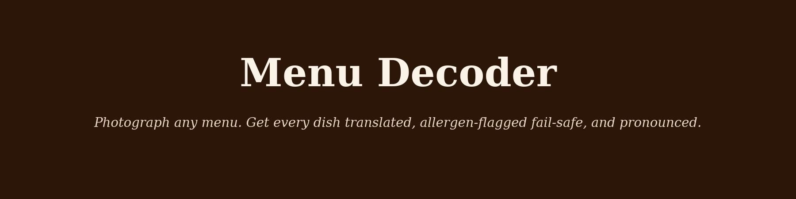
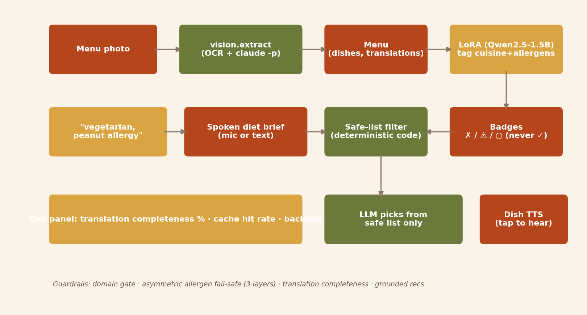
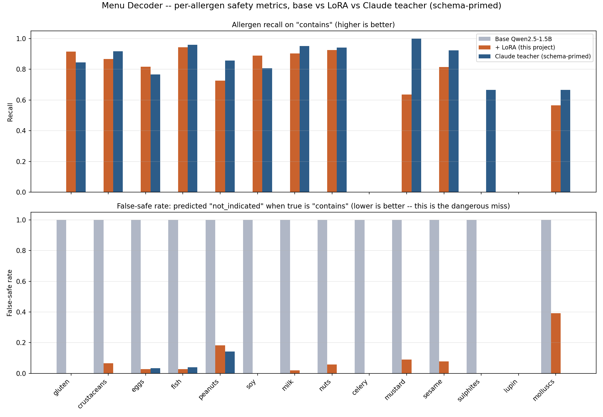
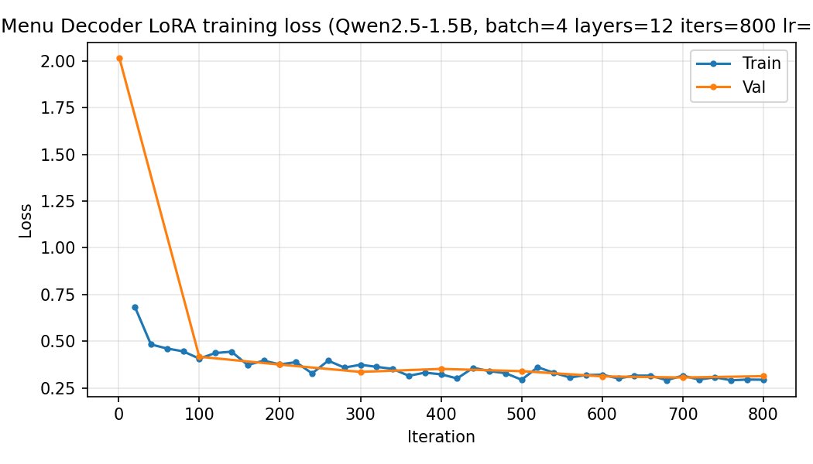

1 · The rubric leans to "may"
The tagging instructions tell the model that if an allergen is
plausibly present in a typical preparation, the answer is
may, not not_indicated.
Handing a chatbot a menu and a peanut allergy is a trust exercise.
Photograph a menu in any language, say your constraints out loud, and get every dish translated, pronounced, and allergen-flagged. The whole thing is built around one rule: when the model is uncertain, the badge warns and never clears. There is no green checkmark for allergens anywhere in this app. An uncertain dish always reads ⚠ ask the staff, and recommendations are filtered to the safe list in code before the model ever gets to choose.

false-safe rate from the fine-tuned tagger, down from 100% for the base model, which never produced usable tags at all.
macro allergen recall on contains — the metric that
matters, reported per allergen rather than averaged away.
enforced layers of fail-safe: the rubric, the renderer, and a deterministic code filter the model cannot talk its way around.
schema tokens needed in the prompt. The 14-allergen contract lives in the weights, not in every call.
↓ the guardrail
A false alarm costs you a question to the waiter. A false all-clear can put someone in hospital. Those two errors are not worth trading off evenly, so the app does not trade them off evenly.
The tagging instructions tell the model that if an allergen is
plausibly present in a typical preparation, the answer is
may, not not_indicated.
contains → ✗ · may → ⚠ ask the staff ·
not_indicated → ○ not indicated. No green check exists in
the code, so no output can produce one.
Dishes with contains or may on any stated
allergen are removed in code before the LLM sees the
list. It picks from what already passed.
A line the vision model genuinely cannot read is marked
unreadable rather than dropped, and translation
completeness is surfaced as a percentage rather than hidden.

↓ the benchmark
The interesting result here is not an accuracy win, it is a token-optimization one, and reading the table requires knowing why the frontier model has two rows.
| System | N | Parse OK | Cuisine | Allergen recall | False-safe | Latency |
|---|---|---|---|---|---|---|
| Base Qwen2.5-1.5B (bare prompt) | 303 | 0.0% | 0.0% | 0.0% | 100.0% | 5.4s |
| + LoRA (this project) | 303 | 100.0% | 99.3% | 69.3% | 7.3% | 6.7s |
| Claude (bare prompt, same as LoRA sees) | 100 | 94.0% | 43.0% | 0.0% | 100.0% | 16.5s |
| Claude (schema-primed) | 100 | 99.0% | 81.0% | 79.2% | 1.7% | 13.4s |
Given the exact same bare prompt the LoRA model trained on, with no schema described anywhere, Claude reasonably answers a different question — "tell me about this dish" — and returns valid JSON using its own field names. Its bare-prompt row reads near-zero by construction, not because Claude cannot identify cuisines or allergens.
Hand it the full output contract and it jumps to 79.2% recall at a 1.7% false-safe rate, which is better than the fine-tune on both. That is the honest comparison, and the fine-tune loses it.
The LoRA model needs zero schema in its prompt because the schema is baked into its weights. A zero-shot system needs the entire 14-allergen contract spelled out in every single call just to attempt the task.
What the four rows are actually measuring
↓ training
Training used 6,750 synthetic dish rows: 15 cuisines × 150
dishes × 3 prompt variants (name only, name plus description, original script
plus translation). The split is by dish family, so a dish's
three variants never straddle train and test —
2,250 distinct families, zero leakage, recorded in
eval/dataset_card.json.
Without that, the three variants of one dish would land on both sides and the benchmark would be measuring memorisation. It is the sort of detail that quietly inflates a headline number when nobody checks for it.

↓ the gap, reported not hidden
The specification requires a human check: roughly 60 dishes stratified across cuisines, with the labels personally spot-checked. That slice has not run, because it needs a person rather than a script.
Everything else on this page is measured. That one is genuinely still open — not fabricated, not approximated from something else, and not quietly skipped. Until it runs, 69.3% recall is a number about synthetic labels.
Building the benchmark also surfaced two real bugs in the Claude CLI harness, which are documented in the writeup rather than silently worked around.
Finish · what it is built on
tag_dishes calls the adapter directly via mlx_lm.generateMenu object with language, sections, dishes and prices(original_text, language), catching repeats within a menu and across menus worldwideeval/benchmark.md — all 14 allergens across all 4 systems